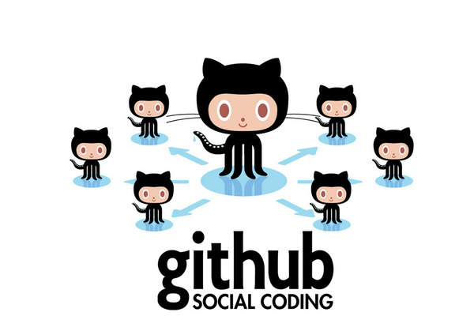
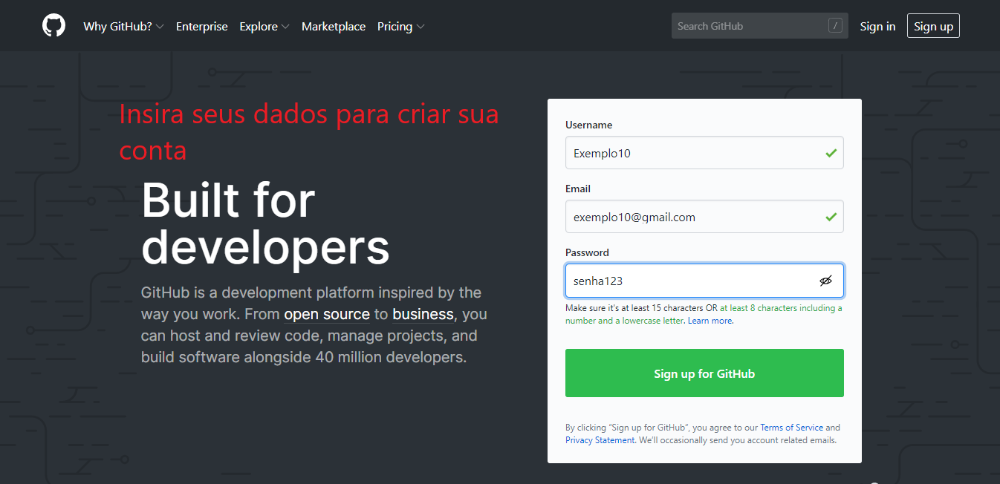
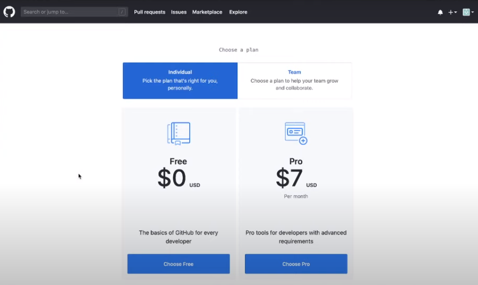
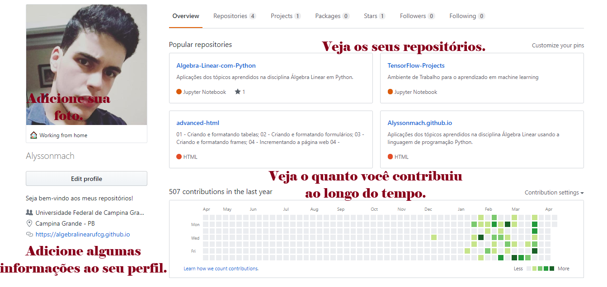
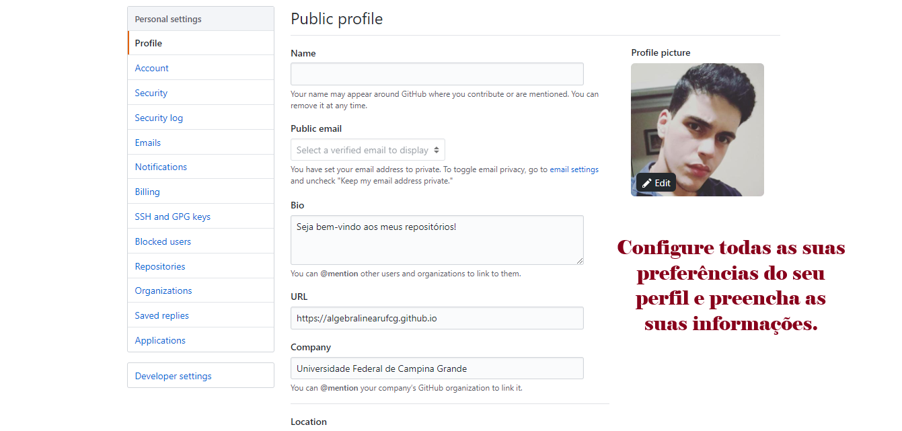
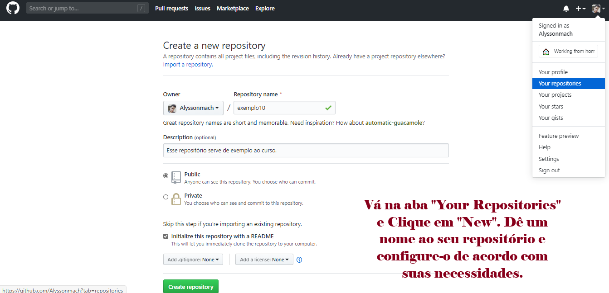
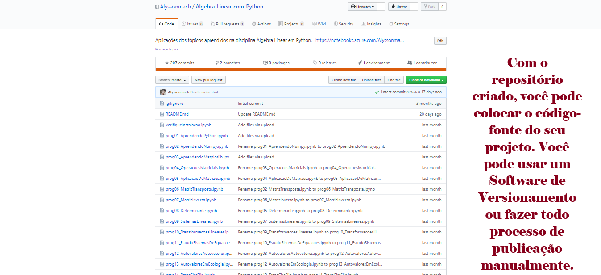
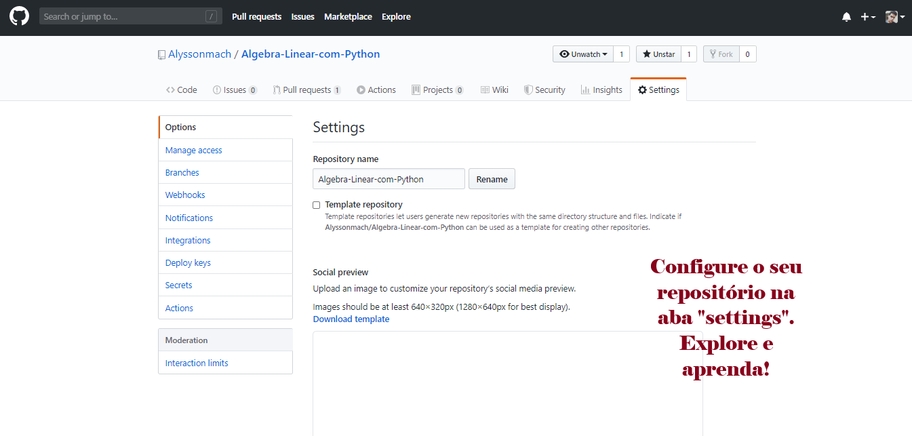
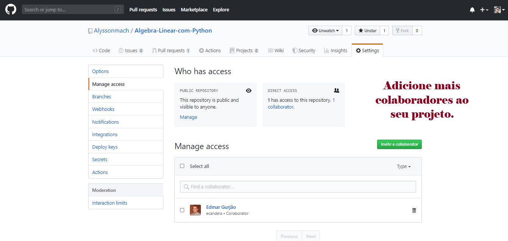

O que é o GitHub?¶
GitHub é uma plataforma online de hospedagem e colaboração em projetos que usam Git. Ela oferece repositórios remotos e ferramentas para compartilhar código, acompanhar mudanças e trabalhar em equipe. Se você ainda não estudou Git, acesse a aula anterior antes de continuar.
O GitHub também permite armazenar e compartilhar arquivos, mas sua principal função é apoiar projetos versionados com Git. Além de hospedar repositórios, oferece recursos de colaboração, como issues e pull requests. Participar desses projetos pode ajudar a aprender com outras pessoas e a construir uma rede de contatos profissionais.
Código aberto (open source) descreve software cujo código é disponibilizado sob uma licença que concede direitos de uso, estudo, modificação e redistribuição, de acordo com seus termos. Isso permite que diferentes pessoas estudem e colaborem no projeto.
Networking é a construção e a manutenção de uma rede de contatos, que pode facilitar a troca de experiências, informações e oportunidades.
O GitHub reúne profissionais, estudantes e entusiastas que publicam projetos, colaboram em repositórios e compartilham conhecimento. A quantidade de usuários muda com o tempo, por isso não incluímos um número que possa ficar desatualizado.

O GitHub foi desenvolvido por Chris Wanstrath, J. Hyett, Tom Preston-Werner e Scott Chacon, e todo o projeto começou em 2008. A sede está localizada em São Francisco, na Califórnia.
O GitHub Pages permite publicar sites estáticos a partir de um repositório. É possível usar HTML, CSS e JavaScript ou um gerador de sites estáticos. O serviço não executa código de servidor, como PHP, nem oferece banco de dados.
Veja as vantagens que o GitHub oferece aos seus usuários:
- Repositórios para organizar código, documentação e arquivos do projeto.
- Histórico de mudanças e branches para acompanhar o desenvolvimento.
- Ferramentas de colaboração, como issues, pull requests e revisões.
- GitHub Pages para publicar sites estáticos a partir de um repositório.
- Integrações e automações, de acordo com os recursos disponíveis e as configurações do projeto.
O GitHub é uma das plataformas de hospedagem e colaboração baseadas em Git. Há outras opções, como GitLab, Bitbucket e Gitea, cada uma com recursos e formas de hospedagem próprios.
| Outras Plataformas análogas ao GitHub: |
|---|
| 1. GitLab |
| 2. Bitbucket |
| 3. Phabricator |
| 4. Gogs |
| 5. Kallithea |
Entrando na Comunidade GitHub¶
Siga os passos abaixo para criar o seu perfil no GitHub e também criar o seu primeiro repositório.

Entre na página https://github.com e crie sua conta gratuitamente. Será necessário verificar o seu e-mail para validá-la e preencher um formulário sobre suas preferências.

O GitHub oferece diferentes planos, com recursos e limites próprios. Consulte as informações atuais antes de escolher. Para acompanhar as atividades deste minicurso, uma conta pessoal é suficiente.

Complete o perfil com as informações que deseja compartilhar. Uma foto e uma breve apresentação ajudam outras pessoas a reconhecer seus projetos e a entender seus interesses.

Nas configurações do perfil, você pode atualizar as informações que deseja compartilhar. A interface e os nomes das opções podem mudar com o tempo.

Na página do seu perfil, procure a opção para criar um repositório. Dê um nome, escolha as opções disponíveis e confira as informações antes de confirmar.

Mais adiante, usaremos o Git para publicar conteúdo em um repositório. Também é possível criar e editar arquivos pela interface web do GitHub, embora o fluxo deste curso use o GitHub Desktop.

Nas configurações do repositório, você pode ajustar opções de acesso, colaboração e outros recursos. Os nomes e a organização dessas opções podem mudar conforme a interface.

Nas configurações de acesso do repositório, você pode convidar colaboradores, desde que tenha as permissões necessárias. Os nomes das opções podem mudar conforme a interface.
Vale salientar que, independente do nível de conhecimentos em programação que o usuário tenha, a plataforma GitHub é acessível a todos, pois com ela, é possível aprender conteúdos de terceiros para, posteriormente, o usuário também ser um fator de contribuição ativa na plataforma.
Próximos Passos...¶
Nas próximas aulas, vamos criar repositórios e preparar as ferramentas para trabalhar com eles.
Está gostando do conteúdo? Compartilhe com seus amigos para que eles possam aprender também! Ajude a tornar a educação gratuita mais plural e democrática.